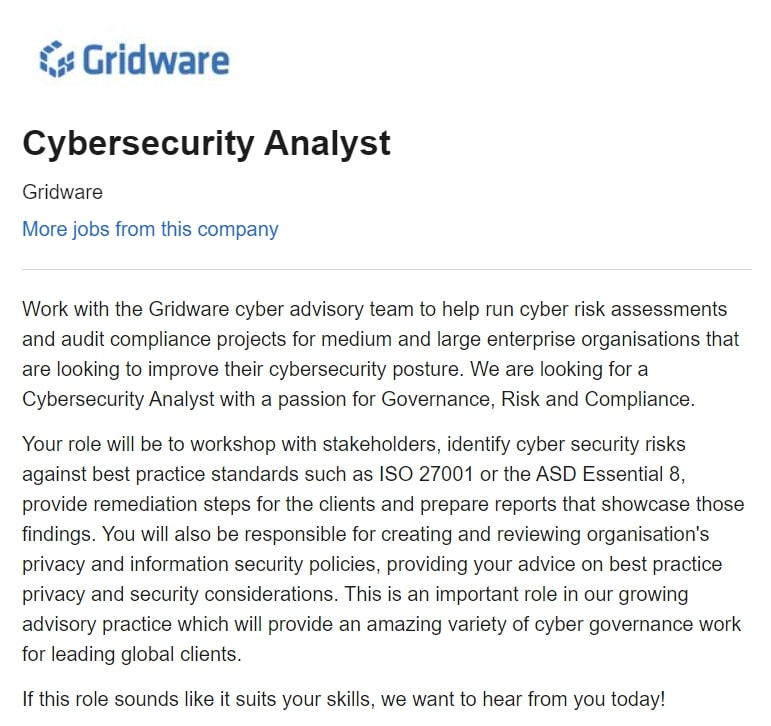
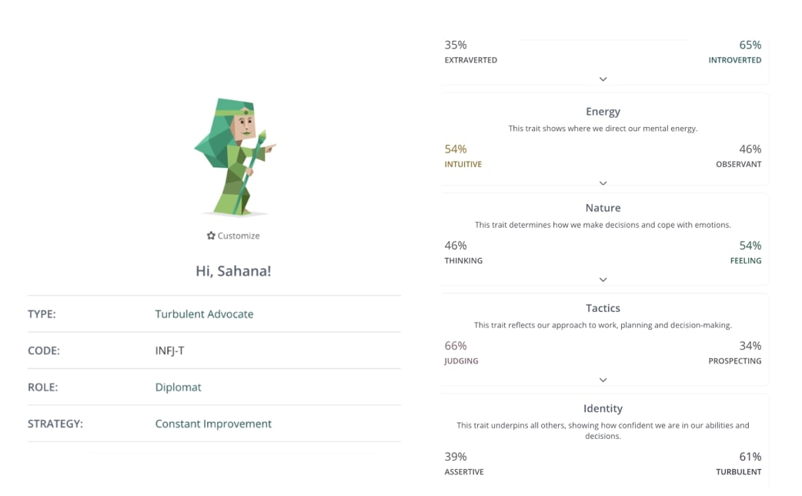
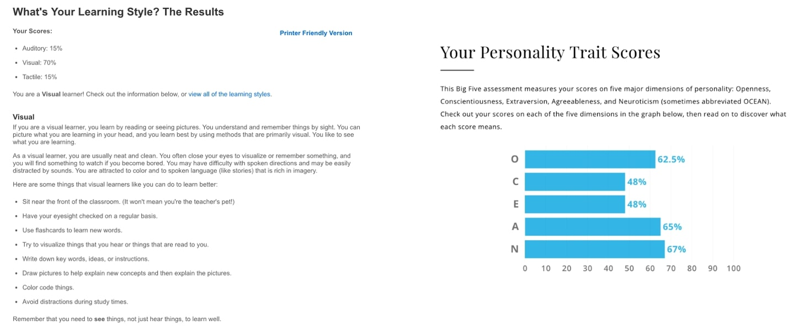

Personal Information
Name: Sahana Sukumar
Student number: 3897992
Student email: s3897992@student.rmit.edu.au
Background information:
My nationality is Indian, and I speak Marathi at home.
Education:
2015-2016: Dandenong High School
2017-2020: Nossal High School
2021: RMIT
My interests:
I am an avid reader who enjoys genres varying from fantasy to thriller/horror to Greek Literature.
My favourite series to date are “Harry Potter”, "Percy Jackson", “The Hunger Games” and "A Court of Thorns and Roses" -which I am currently reading.
My favourite sports are Netball and Swimming. My hobbies include drawing, listening to music and watching sci-fi and thriller movies.
Fun Fact: Skydiving and Bunjee Jumping are at the top of my bucket list!
Interest in IT
What is your interest in IT?
I have been interested in IT ever since I was old enough to start watching sci-fi movies.
I was always fascinated by robots, gadgets and the concept of "hacking." I have some experience in IT which I developed during year 10.
I undertook a semester of Digital Technology as well as robotics where I learned a bit of html and also how to code and build a battle-bot using Lego Mindstorm.
The fields that I am most interested in when it comes to IT are Artificial Intelligence and Cybersecurity.
With regards to AI, I really like how it is a relatively new field and that there is a large scope as well as demand for it.
The large number of uncharted streams in AI, inspires a sense of creativity, freedom as well as challenge, all of which I want to be a part of.
Similarly, Cybersecurity is a versatile career option which offers challenging and diverse environments.
I feel that working in such a field will equip me with an enriched skill set and be rewarding in terms of the recognition that is earned.
One of my idols is Amanda Rousseau (aka @malwareunicorn) who is an Offensive Security Engineer.
She was a part of the team that managed to “ reverse engineer the infamous WannaCry ransomware attack” (Facebook et al.)that took place in the UK during 2017.
During her career, she found herself to be “second-guessed” (Facebook et al.)by a lot of people however what I really admire about her is her passion for cybersecurity, her dedication and her perseverance despite this which led her to becoming one of the most recognised and respected people of her industry.
Why RMIT?
Located in the city, RMIT grants many opportunities for students to explore and connect with a wide range of people as well as organisations.
I really value the support and encouragement that RMIT provides to students by offering numerous workshops that assist in creating resumes and finding jobs as I believe that they will be useful for me in the years to come.
I wish to build on my skills at RMIT by utilising the wide variety of courses (such as RMIT’s micro-credentials), facilities and clubs(like CSIT) that are offered.
RMIT'S dedication to providing a range of facilities and support will enable me to gain the necessary knowledge and give me a head start in preparing me for the demands of a highly competitive industry like IT.
What do you expect to learn during your studies?
I hope to learn more about programming, security, data science as well as AI.
Besides subject- related skills, other aspects that I wish to develop at RMIT include teamwork, initiative and organisation skills.
As with many projects across my courses the concept of communication, initiative and organisation is essential whilst in group settings.
I want to be able to successfully express and carry out my ideas whilst also working with different people and learning from them as well.
Ideal Job
- Problem-solving: being able to solve issues and present solutions in creative and efficient ways.
- An adequate knowledge of the field: Being fluent in a wide variety of "systems such as phones, cloud and wireless networks" (“Top Cybersecurity Skills in High Demand”).
- Communication and collaboration: being able to present information in a way that is understandable and meaningful for your client.
- Attention to detail: being able to "monitor"(“Top Cybersecurity Skills in High Demand”) and identify potential shortcomings of the system and put in place the relevant procedures to resolve them.
- “A Bachelor’s degree in Computer Science, Programming or a related field” (“Top Cybersecurity Skills in High Demand”) such as Bachelor of Science or Bachelor of Information Technology.
- Industry certification such as: Certified Ethical Hacker (CEH) and Certified Information Systems Security Professional (CISSP).
- Work experience in a similar field such as in an Information Technology department or a computer systems analyst.

My future job requires me to work with clients and provide advice regarding their approach to cybersecurity by compiling data collected from risk assessments as well as conducting reviews on their policies. What I really want to learn is the process of pen-testing (kind of like "detective work") which involves simulating a series of " authorised intrusion attempts" (imperva) on the application in order to exploit its weak points and provide solutions to patch the security system to prevent further breaches. I love that this field is competitive, and it requires me to be on my toes and constantly updating myself in order to meet the challenges of new and emerging threats. Although this field often comes with long hours, I look forward to the numerous opportunities for career advancement such as working with global clients. I believe that working with a wide range of people will expand my network and be a great learning opportunity for me to expose myself to new ways of thinking. Overall, I believe that pursuing this career is rewarding and I cannot wait to be a part of it.The main skills required to adequately fulfill this role include:
The qualifications that are required for this job include:
At this stage I do not have sufficient experience or knowledge in this field, however I hope to gain my Bachelor of Information Technology as well as engage in subjects related to security at RMIT. In the coming years, I can ensure that I chose subjects which are related to Information Systems Security and Ethical Hacking as outlined by the required qualifications. I could also consider speaking with a mentor who has knowledge of this field so that I can learn from their experiences.
As for my goals for this year, I aim on improving skills such as my attention to detail by developing my speed and accuracy in the programming languages that are being taught this year such as Python, html, CSS and SQLite. As for problem solving, communication and collaboration, I endeavour to improve my existing skillset by engaging with my team-mates for group projects. Furthermore, I can develop additional skills by completing RMIT’s micro credential courses with a focus on IT. The credentials that would be most relevant for this industry would be Creative Thinking and Digital Solution Design both of which I aim to complete by the end of this year.
Personal Profile


What my scores mean to me:
My Myer Briggs score describes me as an introverted, empathetic and turbulent person. When meeting new people, I tend to be reserved and less inclined to attract a large social group. My high levels of introversion also mean that I spend more time reflecting and thinking things through before I carry out my plan. In terms of my Energy and Nature scores, I am perceived to rely more on my intuition when making decisions and once I have made up my mind, it is difficult for me to be able to adapt to extra hurdles and thus I am seen to be quite judging in my decisions and approach to tasks. Lastly, my high levels of turbulence indicate that I am self-conscious and can react quite strongly to stress, however the personality test suggests that this can be a driving factor behind my desire to improve myself and reach for success.
When paired with the Learning Style test, the Big Five test has provided insights into my approach to learning. These tests claim that I am a visual learner and that I like to think in abstract ways. They suggest that I utilise my creativity to my advantage by making flashcards, drawing pictures to explain concepts and colour coding my work in order to assist my visual style of learning.
Overall, the three tests have assessed me well as a whole, however I do acknowledge that these results are not a prediction or a guide of how I should progress throughout my life. I believe that I can work on some aspects described in the tests, such as my rigidness when in the face of obstacles or interruptions. By practising to be more flexible in the way that I approach my work, I can not only develop resilience, but also develop a sense of confidence as I overcome these hurdles. As for the advice on how I can learn as a visual learner, I can definitely implement more visuals into my notes and flashcards and take time to explain them to others.
My behaviour in a team:
These results suggest that I can be quite reserved and may need to make additional efforts to be open about my opinions and ideas. Moreover, my thinking style is a blend of creativity and practicality and this may not be the same for others, so I should take that into consideration as well while I am communicating with my team-mates. Lastly, my high levels of Agreeableness may ensure that I get along well with others.
How should you take your results into account when in a team?
To some extent I can implement the suggestions outlined by the personality tests when forming a team, however they may not be useful or relevant as the results do not give a clear indication as to whether I am compatible with other types of personalities. For the most part, I will utilise my intuition as well as my strengths when forming and working in my group.
My project Idea
Overview:
My Project Idea is an app called “GiftIt” which is designed to help people store key dates such as birthdays, anniversaries and many other events. Using these dates along with data collected from your phone’s gallery as well as social media, this app can compile a list of possible gift ideas for your chosen recipient. In this way GiftIt can play a key role in reminding you of these special occasions so that you can never miss an opportunity to cherish your loved ones.
Motivation:
“I forgot,” is probably one of the costliest comments when it comes to your friends and family. Whether you forgot their birthday, anniversary or even Mother’s/Father’s Day, it can lead to many awkward moments in life. Often times we can become so involved with our day-to-day activities, that we may not have enough time or energy to organise a gift every year and for so many people. GiftIt acts like your personal assistant and compiles a list of suggestions as to what you could give to them. These ideas are diverse, as they include both products that you can purchase as well as destinations both near and far, and even some simple recipes or crafts that you could consider putting together.
Description:
When you first download the GiftIt app, you must sign in with an email address, allow GiftIt to access your photos, create a profile and select people from your contacts that you would like to add into your account. You can also choose to create categories such as friends, family and colleagues and allocate your contacts into each of them. As for key dates such as birthdays as well as social media platforms that your contact has, there will be an option for you to add them in as well.
Let’s say that you would like to buy a birthday gift for your friend Jennifer. From the main menu, you would select the category “Friends,” which would take you to a page with all the people in this category and from there you would select Jennifer. Under Jennifer’s name, there will be a series of icons related to any social media platforms that she may have, "Key dates", "Gift ideas" and "History." If you select "Gift ideas," there will be folders for each group of ideas specific to Jennifer. From these folders, suppose you choose one that says “Home décor." You will then be presented with options relating to this category for example a coffee table. Thinking that she might like this for her birthday you select it. A series of online stores will be suggested and there will also be an option to select a price range. Moreover, will also be a feature that allows you to check the sources of these gift ideas. As mentioned, GiftIt will have access to your gallery as well as the recipient’s social media platforms, which will allow the app to utilise object and facial recognition to detect certain locations and items that are present on your recipient’s social media platforms and use them to present a list of suggestions.
Another feature that GiftIt has is “history.” This is where you can find a full record of all the purchases you have made through GiftIt for a particular recipient so that you can prevent yourself from purchasing the same gift twice. You may want to manually add in certain purchases made outside of the app and the app will allow you to do this as well. One last feature of this app is the chat feature which can be found on the main menu. This feature will allow you to create group chats which will have options to allocate certain tasks to group members or track the contribution of each member. This feature will be particularly useful when organising events/presents for your chosen recipient.
Tools and Technologies:
The main programming languages that are required to make this app include python, C++, swift and JavaScript. Additionally, open-source tools that can be applied include BuildFirejs, Framework 7 and Ionic, which support app development for both windows and IOS. While constructing the app, it is a good idea to perform research related to User Experience (UX) to better understand the needs of users. Prototypes will need to be made and tested in order to make amendments as per feedback during the development phase.
Skills Required:
This app has many features and will require a team in order to build it. As there are many people in the IT industry with a wide range of skills, building this app could be a great opportunity to share and consolidate their capabilities. Members of this team must have sufficient knowledge and skills related to programming in languages such as python, C++, swift, JavaScript or other suitable languages as the GiftIt app requires these languages in order for object and face recognition to be possible. Knowledge in User Interface design is also necessary as it will determine the overall look and feel of the app and will determine if users can easily navigate and use different features.
Outcome:
If GiftIt is successfully developed, it could be a great way for people to show some appreciation for their loved ones by using this app to organise a gift that is meaningful and something that the recipient will cherish. As with the restrictions slowly easing, this app can bring people back together by organising gatherings and other social events in a quick and easy manner.
Imperva. “What Is Penetration Testing | Step-By-Step Process & Methods | Imperva.” Learning Center, 2019, www.imperva.com/learn/application-security/penetration-testing/. Accessed 15 Mar. 2021.
“How to Become an Information Security Analyst - Salary, Qualifications & Reviews – SEEK.” SEEK Career Advice AU, www.seek.com.au/career-advice/role/information-security-analyst. Accessed 20 Mar. 2021.
60 Brilliant App Ideas for Start-Ups to Launch in 2021 | Intelegain. www.intelegain.com/app-ideas-for-startups-to-launch-in-2021/. Accessed 18 Mar. 2021.
Moyers, Stephen. 15 Best Programming Languages for Mobile App Development 2020. www.spinxdigital.com/blog/mobile-app-development-languages/. Accessed 19 Mar. 2021.
“Mobile App Development Tools: A Detailed Comparison - BuildFire.” BuildFire, 11 Feb. 2017, buildfire.com/mobile-app-development-tools/. Accessed 21 Mar. 2021.
W3Schools. “W3Schools Online Web Tutorials.” W3schools.com, 2019, www.w3schools.com/. Accessed 16 Mar. 2021.
“Top Cybersecurity Skills in High Demand.” Top Cybersecurity Skills in High Demand, online.champlain.edu/blog/top-cybersecurity-skills-in-high-demand. Accessed 18 Mar. 2021.
Facebook, et al. “How I Made It: Amanda Rousseau’s Creative Side Helps Her Protect People from Hackers.” Los Angeles Times, 3 Aug. 2018, www.latimes.com/business/la-fi-himi-amanda-rousseau-20180803-story.html#:~:text=Amanda%20Rousseau%2C%2031%2C%20is%20a. Accessed 22 Mar. 2021.
HTML5 UP. (2019). HTML5 UP. [online] Available at: https://html5up.net/.